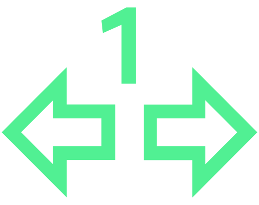

Le clignotant est en panne
Clignote plus vite – clignotant droit en panne
Contrôler le clignotant droit.

Clignote plus vite – clignotant gauche en panne
Contrôler le clignotant gauche.

Clignotant remorque en panne

ne clignote pas lorsque la remorque est attelée – le clignotant de la remorque est défaillant
Contrôler l’éclairage de la remorque.